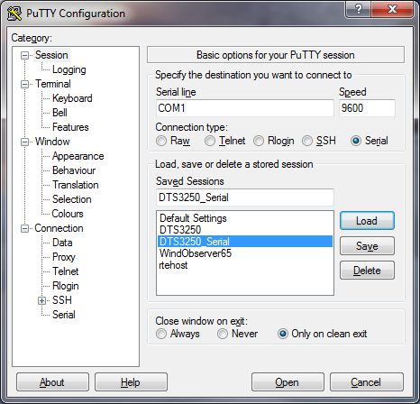
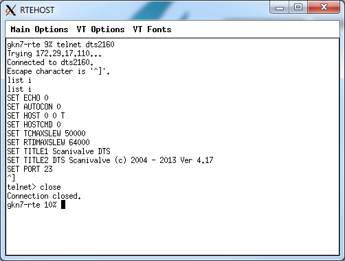

How To - Configure a DTS3250/DTS4050 Temperature Scanner
This How To describes the steps required to configure a DTS3250/DTS4050 temperature scanner.
To Configure a DTS3250/DTS4050 Temperature Scanner
- Ensure the DTS scanner is powered down by disconnecting the power from the DTS scanner itself.
- Connect a computer with a serial console program to the serial port of the DTS scanner. Refer to DTS user manual for connecting to the DTS. Any serial console program should work, examples are PuTTY.
- Setup the DTS serial interface to match the configuration windows as displayed.

- Open a session using the serial console software.
- Apply power to the scanner by reconnecting the scanner power connector.
- As the scanner begins to power up, press any key on the keyboard. The VxWorks operting system window is displayed.
If the scanner finishes the boot process, simply cycle the power to the DTS scanner to restart the process.
- In the VxWorks operating system window, enter p and press Enter. The scanner boot settings window is displayed. Continue to press Enter to cycle through the current boot settings.
-
Enter c and press Enter. This will cycle through each setting allowing you to change them. Press Enter if you do not want to make a change.
- In the inet on ethernet setting field, type in the new IP address.
Do not try to delete the old address. The backspace and delete characters cause the scanner to get confused. It will look odd with the old address and the new address but once you are done it is ok.
- Enter the gate way into the IP host inet setting field. Type the new address the same way as Step 8.
- Continue to cycle through all of the setting fields until they are complete.
- Enter p and press Enter to confirm the new settings. Continue to press Enter to cycle through the current boot settings.
- Type @ (Shift+2) and press Enter to reboot the scanner.
To Confirm and Change TCMAXSLEW with proDAS RTE
- Plug the Ethernet connector in the proDAS hub with a 100Base-T to hub cable typology.
- From the proDAS RTE, type telnet <DTSHostName> and press Enter.
- Press Enter to tell the scanner to listen for new commands.
Nothing will be displayed on the screen.
- Type list I and press Enter. A list of parameters are displayed (see below).

- To change the TCMAXSLEW, type set tcmaxslew 0 and press Enter.
Nothing will be displayed on the screen but the value has changed.
- Type save and press Enter. This saves the value to non-volatile memory.
- Type reboot and press Enter. This reboots the scanner with the new value.
To Confirm and Change TCMAXSLEW with Putty
- Plug the Ethernet connector in your computer with a 100Base-T to computer cable typology.
- Open a session.
- Press Enter to tell the scanner to listen for new commands.
Nothing will be displayed on the screen.
- Type list i<cr> and press Enter. A list of parameters will be displayed (see below).
- To change the TCMAXSLEW, type set tcmaxslew 0 and press Enter.
Nothing will be displayed on the screen but the value has changed.
- Type save and press Enter. This saves the value to non-volatile memory.
- Type reboot and press Enter. This reboots the scanner with the new value.